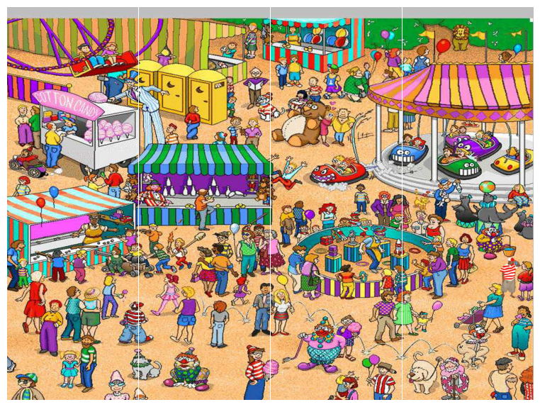
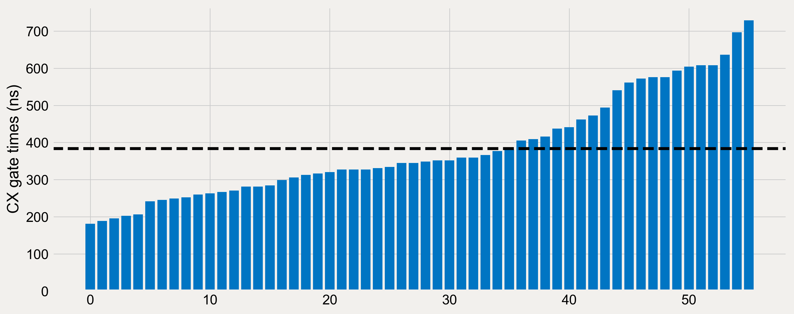
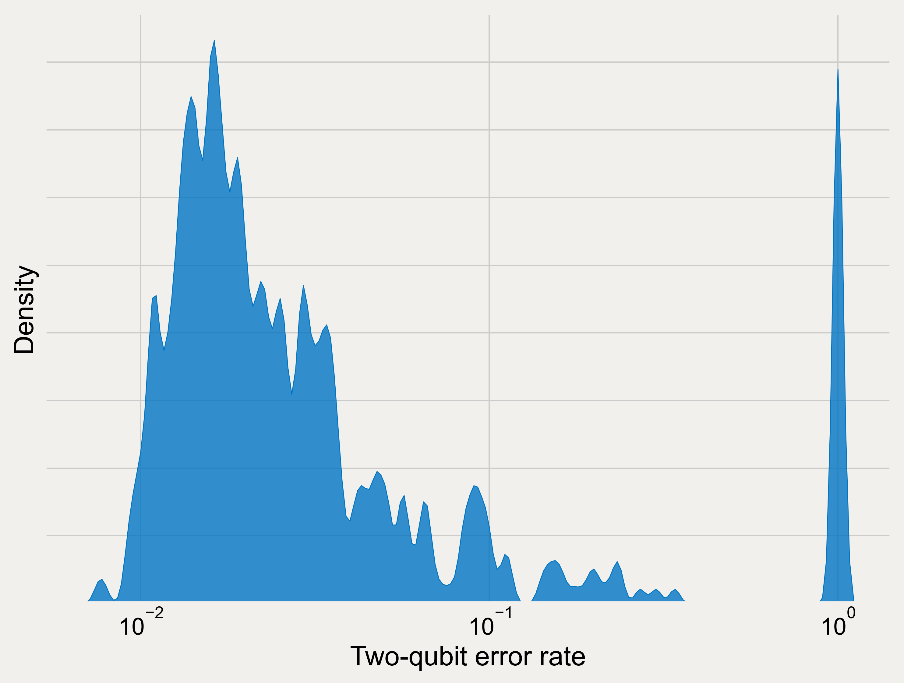
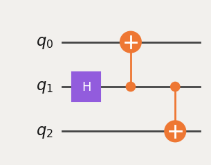
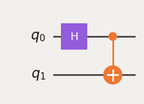
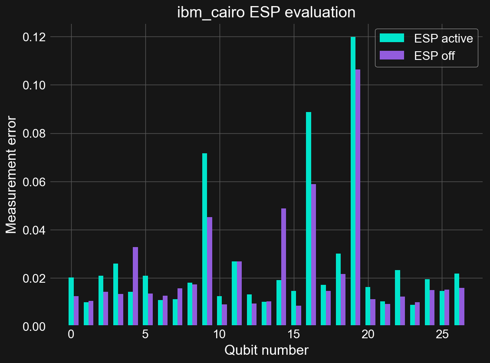
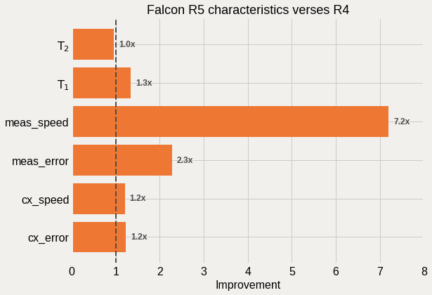
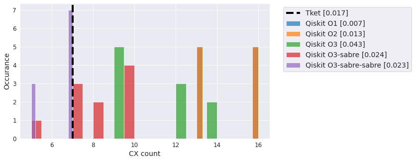
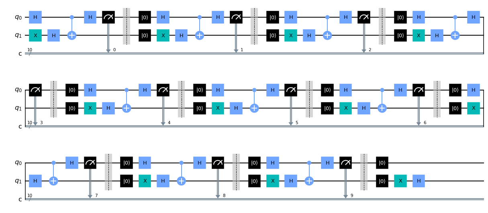

Posts by Paul Nation
Finding Waldo using Grover Search
- 05 July 2023
The files for this tutorial may be found here: IBM-Quantum-Technical-Enablement/waldo-grovers
Grover’s algorithm is an unstructured search algorithm that aims to find the input to a black-box function/oracle that returns a desired output value with high-probability. Here we will show how to formulate such a search problem using Qiskit and it’s circuit library to find Waldo within the following image:
Understanding IBM Quantum hardware calibration schemes
- 24 May 2023
A high-quality quantum computer is more than just the sum of its constituent building blocks. How one manipulates the qubits and other components using classical control electronics plays an important role in determining fidelity of circuit operations performed on hardware.
With the introduction of its 127-qubit Eagle R3 processors, IBM Quantum has changed its gate and measurement calibration methods to focus on stability rather than fast gate operations. This new “uniform” calibration technique is designed with an eye toward workflows using Probabalistic Error Cancellation (PEC) [van den Berg et al., 2021, Temme et. al., 2017]. We will see that, compared to calibrations aimed at fast gate times, uniform calibrations reduce idle times within circuits by keeping entangling gate durations constant across almost the whole device.
Accessing device properties without an IBM Quantum account
- 12 May 2023
The properties of an IBM Quantum device (called a ‘backend’ in Qiskit) are important parameters used to gauge the quality of a machine, provide additonal information for the circuit compilation process, and additional information needed for scheduling circuits and pulse-level control. Most often this information is retrived directly from a backend object in Qiskit after loading your IBM Quantum account. However, the properties of all the deployed devices on the IBM Quantum website are accessible with no account at all! This is actually quite unique, as most quantum hardware vendors provide device-level details only to paying clients, or at most give a static snapshot at some instance of time. Qiskit itself includes static snapshots of IBM Quantum devices that can be used for transpilation and noisy simulations. However, because device properties can vary over time, these “fake backends” are rarely a good model for a live system.
Here we show you how to query the IBM Quantum API directly for current system properties, and detail how to utilize this information in a couple of different ways.
Generating Pauli-twirled circuits in Qiskit
- 02 February 2023
Pauli-twirling is a quantum error suppression technique that uses randomization to noise shape coherent error into stochastic errors, by combining the results from many random, but logically equivalent circuits, together. This is beneficial because while incoherent errors add up linearly with circuit depth, coherent errors can scale quadratically. Here we will show how to generate Pauli-twirled circuits, where we focus on twirling two-qubit gates within a circuit. This technique has been used, for example, in this work by Kim et al.: arXiv:2108.09197. We will show how to compute the possible Pauli sets for any two-qubit gate, and show how to create a Qiskit Passmanager that implements the routine, and can be combined with other transpilation techniques.
Here are all of the imports used in this notebook.
How to make your backend a directed backend
- 28 January 2023
Here we show the reader how to construct a directed IBM Quantum backend from an undirected one. This yields some performance benefits as the Qiskit transpiler can better optimize single-qubit gates within the circuit.
Recently IBM Quantum announced its new Sherbrooke device that allows users to directly work with cross-resonance gates, and exposes only the natural direction that the gates operate in. CNOT gates, which are comprised of cross-resonance gates on IBM Quantum systems, also have a natural direction, but current devices that use CNOT gates as their two-qubit basis gate do not directly express this directionality. Indeed, the coupling map (topology) for these systems is symmetric / bi-directional; if you query the system you will see that it indicates that a backend can do a CNOT gate between qubits A & B (control and target), as well as B & A. If a CX gate that is used in a circuit is not in the natural direction, the system will transparently flip it around in software and execute the circuit. This comes with a cost however. To see this, lets make a Bell state in the usual fashion (ignoring measurements for brevity):
Quantum Practitioners Forum 2022: CHSH Distance Challenge
- 07 November 2022
The goal of this challenge is to entangle a pair of qubits, as far away as possible (to be defined below) from the other and still recover a CHSH violation. How best to generate long-range entanglement an interesting challenge, and there are multiple possible techniques, some introduced in the Quantum Practitioners Forum, that might help in this process. Other tools might also help increase the fidelity of the final CHSH signal.
Participants are tasked with generating long-range entanglement on real quantum hardware through the generation of Bell states such that measurements on qubits in the Bell pair are as distant as possible while still recovering a signal that shows a CHSH violation. Here distance is defined to be the shortest path connecting qubits on a graph of the systems coupling_map:

[BETA] Readout error mitigation in Runtime
- 22 August 2022
One of the primary goals,if not THE primary goal, of the Runtime is abstraction. Namely, users should not have to know detailed hardware knowledge and platform specific techniques for achieving good results. Otherwise, it is difficult to make progress moving up the software stack into algorithms and applications.
One of the first examples of this is the introduction of automated readout error mitigation into the sampler and estimator Runtime primitives. On superconducting platforms, readout error is ~2%, and is something that is readily correctable using recent mitigation methods. The primitives use two different methods for readout mitigation:
Understanding fair-share scheduling
- 26 July 2022
Here we will introduce the reader to Fair-share Scheduling, the method by which most IBM Quantum systems are accessed. We will go over the basics of Fair-share and understand its behavior via simulation.
Here we import the tools we will need to make a threaded Fair-share scheduling simulation.

Going down the Wormhole
- 14 July 2022
Recently our Partners over at Lawrence Berkeley National Laboratory (LBNL) published an interesting paper on probing quantum gravity in the lab: arXiv:2205.14081. This paper caught our eye for two reasons. First, it is about teleportation via wormholes, so why not check it out? Second, it compares our quantum systems verses the trapped-ion systems from Quantinuum. From a competitive standpoint, these types of papers are fun to look at and see if we can do better. Trying to do so is the basis for this notebook. If you want all the details you will need to see the paper, however the basics can be gathered from Figure 1 in the paper:
Basically they are creating entangled pairs of qubits at the beginning; a prerequisite of all teleportation procedures. Doing evolution backward and forward by the same amout of time on the L group, coupling the L and R groups of qubits with a tunable phase g, and then performing the forward evolution again on the R group of qubits, and then measuring the state on the bottom qubit. As a function of the coupling g the expectation value of the Z operator on the last qubit in both simulation and on the real quantum hardware is seen to be:

Excited State Promotion (ESP) Readout
- 20 December 2021
Excited State Promotion (ESP) readout is method for decreasing measurement errors in quantum computing systems where decay from the excited \(|1\rangle\) state to \(|0\rangle\) is non-negligible over the measurement timescales. Although it was originally an useful technique on the previous generation Falcon R4 systems, today it is only available on a few Falcon R5 systems where the nearly order of magnitude improvement in measurement times leaves little value in using this functionality. In testing, it looks to even be a bit worse performing than the standard readout method. ESP readout is on by default for those systems that support it. To disable it run:
On many quantum computing platforms one of the two computational basis states, the \(|1\rangle\) state by convention, is an excited state of the system with respect to the ground state \(|0\rangle\). The difference in energy between these two states defines the frequency of the qubit through the relation \(E=hf\). Because the \(|1\rangle\) state is an excited state, there is a non-zero probability that the state will decay to \(|0\rangle\) via interaction with the environment. The characteristic timescale for this is the \(T_{1}\) time of the qubit. When performing gate operations, or non-reversible instructions like measurements on qubits, if the time it takes to perform these operations is a non-negligible fraction of \(T_{1}\), then there is a possibility that this decay has occurred.
Comparison of Falcon R5 processors verse R4
- 28 November 2021
Recently IBM Quantum announced the move to revision 5 (R5) of its Falcon processors see this tweet from Jay Gambetta. In particular it was highlighted that there is a 8x reduction in meausrement time on these systems. Lets see if this, or any other enhancements, are visible from the system calibration data.
The highlight of the recently released Falcon R5 “core” systems is their much improved measurement times (7x) and error rates (2x). On these systems a measurement is roughly twice as long as a CNOT gate, compared to 13x on the old R4 systems, and allows for implimenting high-fidelity dynamic circuits with resets, mid-circuit measurements, and eventually classically-conditioned gates. For other tasks, the modest improvements in the CNOT gate errors and \(T_{1}\) times are also welcomed.
Improving state prep errors on IBM Quantum systems
- 07 November 2021
It is often taken for granted that qubits are initialized to zero when executing quantum circuits on hardware. However, errors in the reset process mean that this initialization is not perfect leading to state preparation errors. Here we will look at state prep errors and how to improve them on IBM Quantum systems.
Here we will use two lesser known configuration variables available on IBM Quantum systems to do so. First is rep_delay. This is the delay time before the next circuit is executed. Each backend has a different default_rep_delay (although as of the time of writing many are \(250~\mu \rm s\) or lower) and support tuning this parameter from \(0\) up to \(500~\mu \rm s\). Why in the world would I want to vary this parameter? Well if I set rep_delay=0 then I can get much faster throughput as the default delay is nominally longer than the \(T_{1}\) time of the system. However when doing so you are trusting the implicit reset (called “unconditional reset”) to do its job and reset the qubits to their ground state with high-fidelity. Failure to do so would lead to state-prep errors that propagate through the circuit. This is why the delay is usually longer than \(T_{1}\); let the enviornment help your reset fidelity. Second is init_qubits that tells the hardware to not perform an unconditional reset. As no reset at all would quickly lead to junk, this setting needs to be done in concert with reset instructions being added to the beginning of your circuits. Perhaps this is better, or maybe a single reset at the beginning and the uncondtional reset. Lets find out.

Choosing the best Qiskit swap mapper
- 31 October 2021
One of the most important (perhaps the most important) steps when compiling quantum circuits for architectures with limited connectivity is swap mapping. If a requested two-qubit gate cannot be implimented directly on hardware, the states of the corresponding qubits must be swapped with those of their neighboors until the states reside on qubits where a two qubit gate is supported. Swap gates are expensive, equal to three CNOT gates, and therefore moving qubit states around using the fewest number of swap gates is desireable. Unfortunately, directly computing the minimum number of swap gates is NP-complete, and heuristics need to be developed that come close to the ideal solution while scaling favorably with the number of qubits.
Qiskit supports a variety of swap mappers and other optimization settings, and how to best set these options is important for getting high-fidelty results. Additionally, there are other Qiskit compatible compilers out there that should also be evaluated. To this end, here we look at a selection of circuits compiled with various Qiskit compiler settings, as well as those produced with the Cambridge Quantum Computing (CQC) Tket compiler. We will investigate the performance of these methods in terms of both number of CNOT gates in the output, as well as the associated runtimes. Because Qiskit swap mappers are stochastic, we will run each one several times and plot the distributions of results.
Dynamic Bernstein-Vazirani using mid-circuit reset and measurement
- 27 October 2021
The ability to do mid-circuit reset and measurement unlocks a variety of tools for executing quantum circuits. A brief discussion is given in this IBM Research blog post. On particular possibility is the ability to reuse qubits, and in doing so reduce the hardware requirements of some algorithms. The Bernstein-Vazirani (BV) algorithm is one such example. In particular, when using phase-kickback, BV usually requires a high degree of qubit connectivity to impliment. This has been used by trapped-ion hardware vendors to show that their hardware gives better fidelity on these problems, e.g. see (https://arxiv.org/abs/2102.00371 and https://www.nature.com/articles/s41467-019-13534-2). However, with reset and measurement, BV requires only two qubits, making connectivity differences mute. We showed this in a reply Tweet: https://twitter.com/nonhermitian/status/1362348935440986113, but did not explain how we got that figure. So here is how I did it.
Here we select the backend and extract its two-qubit gate coupling map. This is not the same backend used in the original figure as, at the time or writing, that one is offline. It is however the same processor family and revision.
